for external fermions,
for external fermions,  for photons,
for photons,  per internal fermion,
per internal fermion, Rules (Feynman gauge, electron charge  )
)
| element | factor |
|---|---|
| incoming / outgoing e⁻ | u(p,s) / ū(p,s) |
| incoming / outgoing e⁺ | v̄(p,s) / v(p,s) |
| incoming / outgoing photon | ε_μ(k) / ε*_μ(k) |
| vertex | −ieγ^μ, momentum conserved |
| internal electron | i(p̸ + m)/(p² − m² + iε) |
| internal photon | −i g_μν/(q² + iε) |
| loop | ∫ d⁴k/(2π)⁴, and −1 for a fermion loop |
Follow each fermion line against the arrow when writing spinors and matrices. Diagrams differing by exchange of identical external fermions get a relative minus sign.
Derivation sketch
Expand
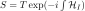
with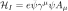
to order ; Wick's theorem pairs fields into propagators (contractions) and external states; integrating vertex positions gives momentum conservation at each vertex (Feynman 1949; Dyson 1949). The
; Wick's theorem pairs fields into propagators (contractions) and external states; integrating vertex positions gives momentum conservation at each vertex (Feynman 1949; Dyson 1949). The 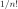
cancels against the permutations of vertices.Crossing symmetry
Moving a particle from initial to final state turns it into its antiparticle with
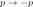
: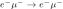
(t-channel) and (s-channel) have the same
(s-channel) have the same 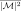
with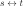
.Worked example
:
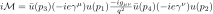
. Spin-averaged, high energy: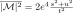
. Crossing :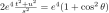
for.
Engineering applications
Monte Carlo event generators for detector design, radiation transport codes (Geant4) that tabulate QED cross sections, Feynman-diagram reasoning in condensed matter (electron–phonon diagrams for mobility and superconductivity).
Pitfall
Polarisation sums:
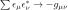
is valid only for gauge-invariant (current-conserving) amplitudes with all diagrams included.